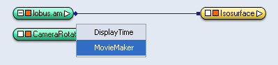

In this tutorial you will learn how to record a self-created animated sequence into a movie file using the MovieMaker module.
In our first example we will just use a camera path to animate the scene, whereas in our second example we will rely on the demo sequence created in Section 2.11.
If you have created a visualization of your data and want to create a movie showing this visualization from all sides or from certain interesting viewpoints, you can create an appropriate camera path and record a movie by following the camera along that path.
Let us create a simple example. Load the lobus.am data set from the tutorial subdirectory and attach an Isosurface module to it. Choose an isosurface threshold of 70 and press the Apply button. The result should look similar to this:
The easiest way to create a simple camera path is to use the CameraRotate module. Select Create/CameraRotate from the menu, and press the play button of the newly created module. You can watch the scene rotate in the viewer while the time slider is playing (load network).
To record an animated scene into a movie file, you need to attach a MovieMaker module to a module that possesses a time slider port. The movie is recorded by going through the individual time steps and taking snapshots of the viewer along the way.
In our example, the CameraRotate module has a time slider, so we can attach a MovieMaker module to it by right-clicking on the CameraRotate icon in the Pool and selecting MovieMaker from the popup menu:

In the MovieMaker module, first click on the Browse button in the Filename port and enter a movie file name like c:/tmp/test.mpg. The .mpg suffix suggests that the movie file format will be MPEG, which is a widely accepted standard format for digital movies achieving a good compression ratio.
Next, adjust the parameters of the MovieMaker module to your liking, e.g., change the number of frames, the image size, or the compression quality. Please refer to the MovieMaker documentation for details.
In our example, let us choose 180 frames and leave all other parameters untouched. Since the CameraRotate module does a full rotation of 360 degrees, each of the 180 frames will represent a rotation of two degrees with respect to the previous frame. Press the Apply button to start recording.
Wait for some time while the MovieMaker module drives the CameraRotate module and accumulates the snapshots. Please note that the speed during the recording process is different than the playback speed of the movie. Now view the resulting movie file test.mpg with a movie player of your choice (e.g., Windows Media Player or a similar tool). Experiment with the recording parameters until you get the desired result (e.g., control the file size and image quality by changing the Compression quality value, choose different image sizes to see up to which image size your computer is capable of smoothly displaying the movie, and change the number of frames to control the speed of the rotation).
Now we try to record a movie of a more complex animated scene. To this end, we load one of the networks that we have created in in Section 2.11: load network.
As you might remember, the basic idea of the DemoMaker/DemoDirector module was that you define a set of events to be executed on a certain time line. Check this out by clicking the play button in the DemoDirector GUI. You should see a nicely animated demonstration.
If you remember the previous section in this tutorial, you might already have an idea of how we can record this animated demonstration into a movie file. Like the CameraRotate module in the first example, the DemoMaker module is controlled via a time slider that we can attach to. So simply right-click on the DemoMaker icon in the Pool and attach a MovieMaker module. Like before, enter a movie file name and select the number of frames before you click on the Apply button to start recording.
{kind=link}
{kind=link}